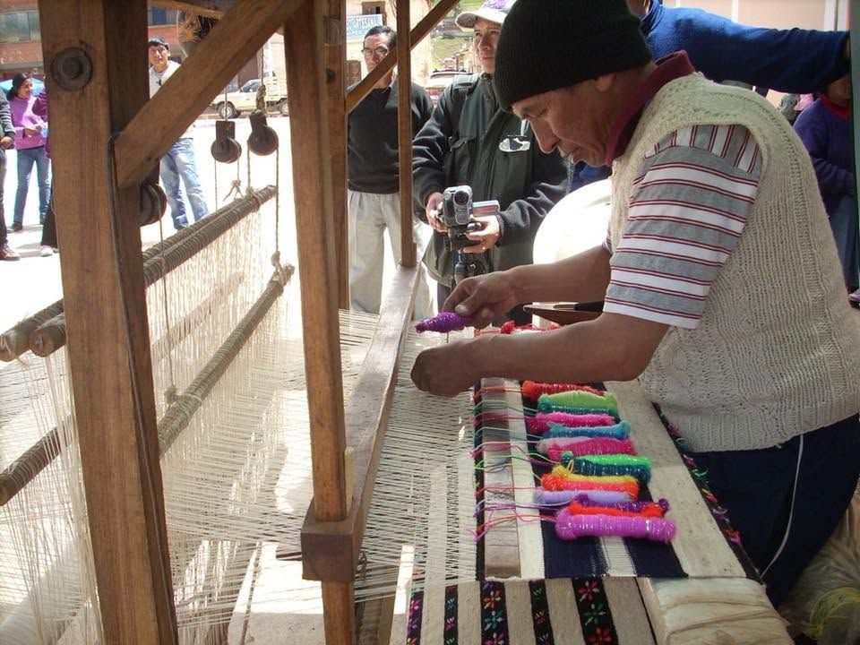
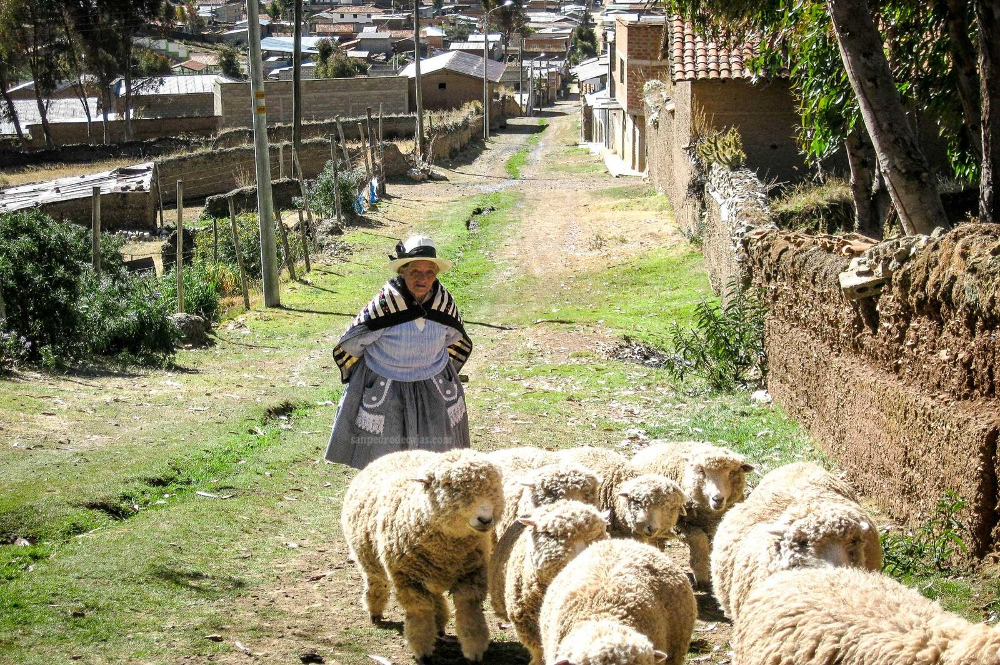
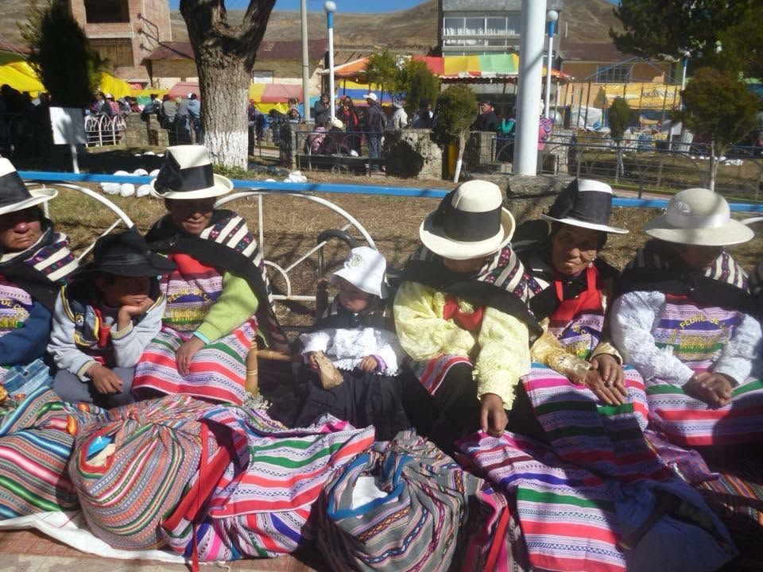
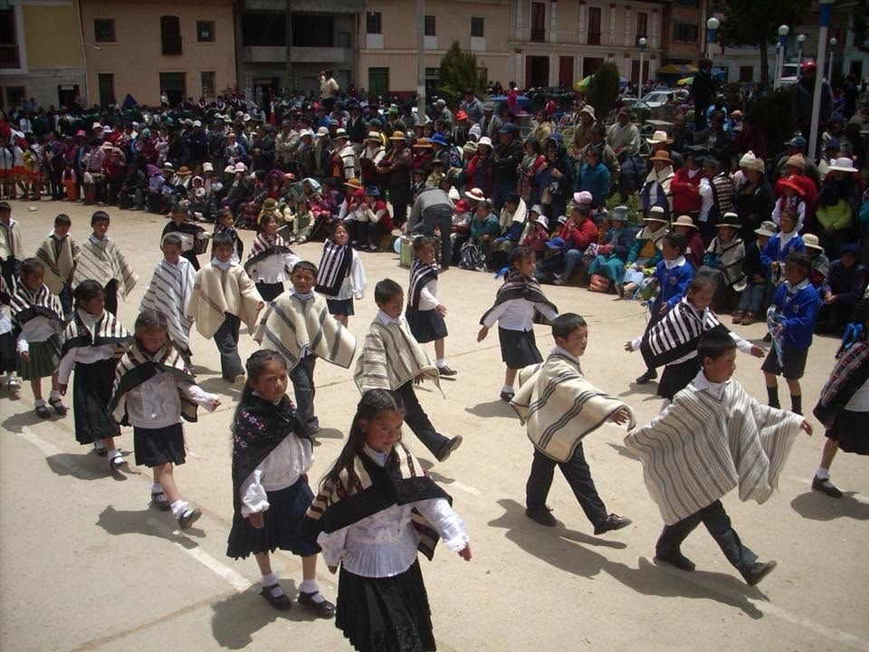
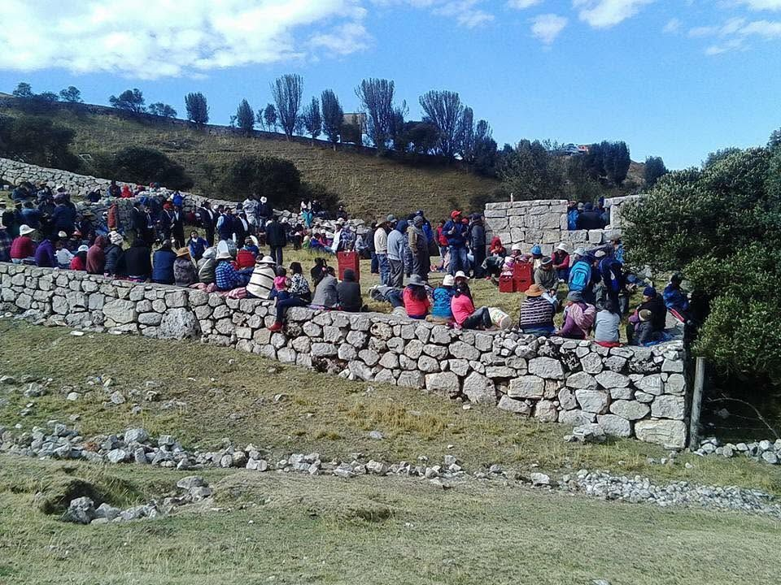
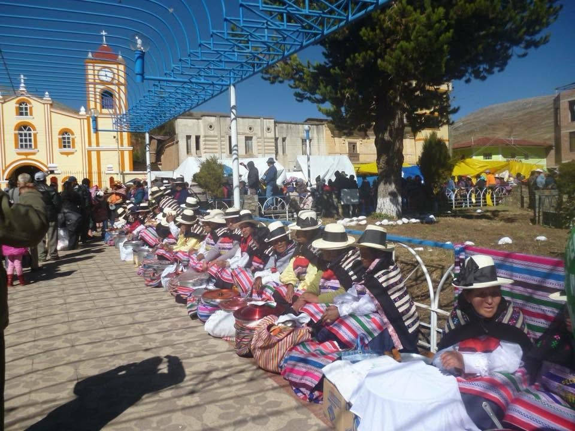
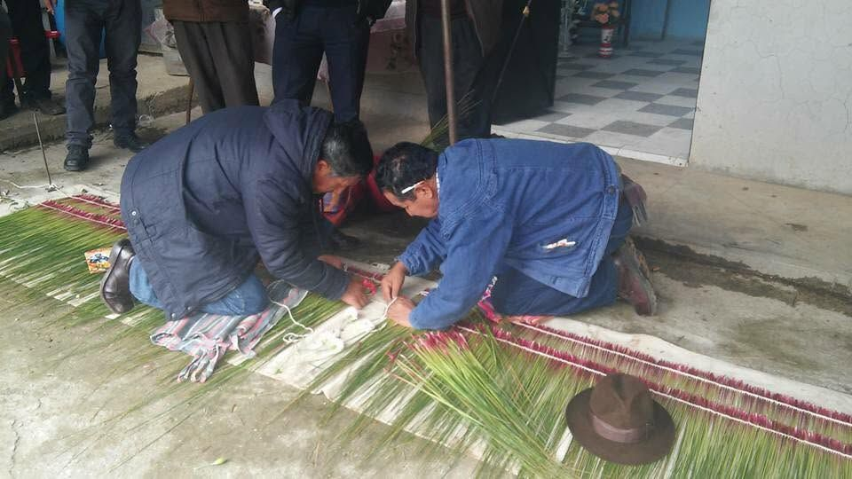
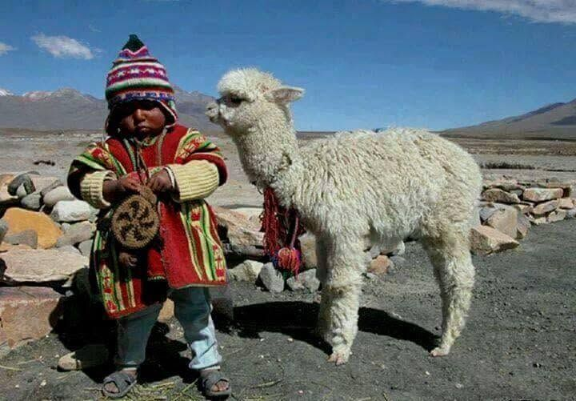
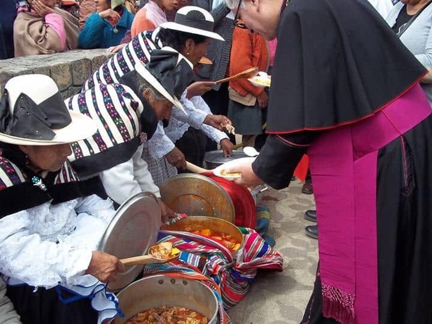
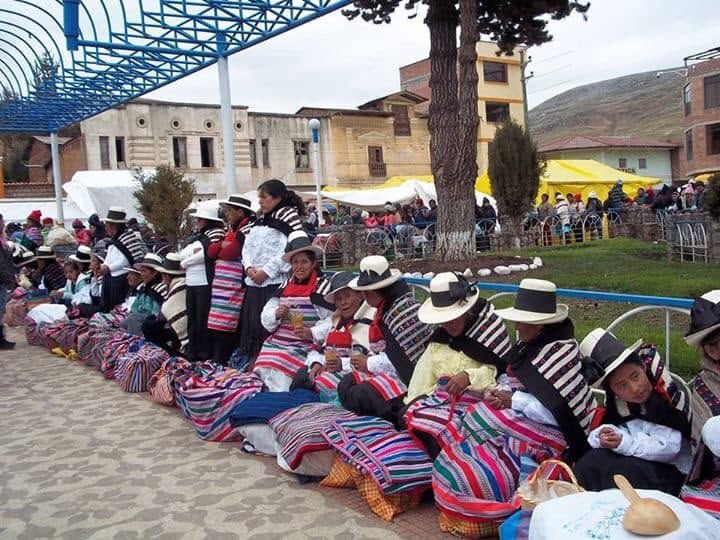

Hilanderas
Desde niñas aprenden a hilar la lana con la puchca. Su hilo fino es la base de los tapices y mantas que dan fama al pueblo.
Nuestra Gente
Hilanderas, tejedores, pastores, cocineras y niños: los sampedranos, dentro y fuera del pueblo, mantienen viva una herencia tejida a mano durante generaciones.
Desde niñas aprenden a hilar la lana con la puchca. Su hilo fino es la base de los tapices y mantas que dan fama al pueblo.

En el telar de pedal convierten la lana teñida con plantas en tapices y mantas reconocidos dentro y fuera del Perú.

Cuidan ovejas, alpacas y llamas en las punas. De sus rebaños sale la lana que luego hilan y tejen las familias.

Con sus ollas envueltas en mantas, las señoras comparten la comida con el visitante: el gorpagaray es la hospitalidad sampedrana.

Aprenden las danzas, el hilado y las costumbres en la escuela y en casa, para que la tradición siga viva.

Barrios, comuneros y autoridades se reúnen en asambleas, faenas y fiestas para decidir y trabajar juntos.
Personajes
Las figuras que dan color a cada celebración del calendario sampedrano.

Con sombrero blanco, manta listada y faldas de colores, son el rostro de cada fiesta y del gorpagaray.

Bailan con trajes y máscaras tradicionales al ritmo de las bandas en las fiestas patronales.

Recuerdan los viajes con llamas y burros que unían el pueblo con los valles y las minas.

En Navidad arman belenes y alfombras con ichu, flores y lana para la Quiulladanza.
"Sampedranos de corazón: donde estemos, llevamos un pedazo de nuestra tierra tejido en el alma."
Postales





¿Conoces a un sampedrano o sampedrana con una historia que contar? Envía su historia →